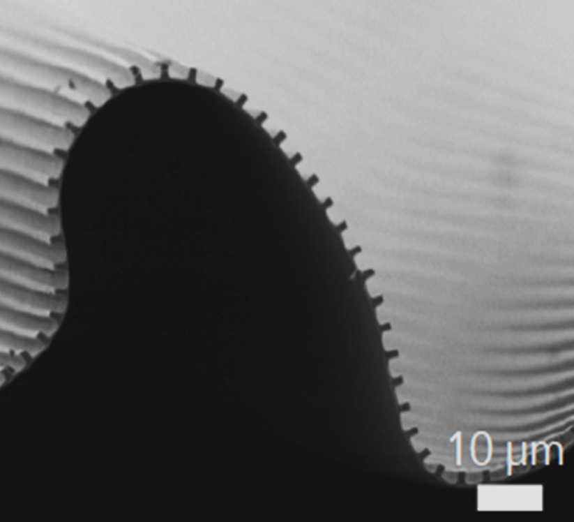

<style>
  .timeline-TweetList .timeline-Tweet-text {
    font-size: 10px !important;
  }
</style>
<section class="home">
  <div class="parallax-container">
    <div class="container" style="margin-top: 125px">
      <p class="center font_0">Stingelin Lab</p>
      <br />
      <p class="light uppercase center college_info">
        Materials Science and Engineering <br />
        Chemical and Biomolecular Engineering
      </p>
    </div>
    <div class="parallax"></div>
  </div>
  <div class="container padding_top_25">
    <div class="description">
      <div class="section">
        <div class="row">
          <div class="col s12 l6">
            <div class="row">
              <div class="col s12">
                <h3><i class="mdi-content-send brown-text"></i></h3>
                <p class="">
                  Welcome to the Stingelin Group! Our current research interests
                  encompass the broad field of organic functional materials,
                  including organic electronics; multifunctional
                  inorganic/organic hybrids; smart, advanced optical systems
                  based on organic matter; and bioelectronics. Establishing
                  interrelationships between performance, processing and
                  materials’ structure are thereby a central topic. Our group’s
                  multi-disciplinary efforts in the Materials Science field have
                  been exploited to build collaborations across departments and
                  faculties at Georgia Tech.
                </p>
              </div>
              <div class="col s12">
                <div class="carousel">
                  <a class="carousel-item"
                    ></a>
                  <a class="carousel-item"
                    ></a>
                  <a class="carousel-item"
                    ></a>
                  <a class="carousel-item"
                    ></a>
                  <a class="carousel-item"
                    ></a>
                  <a class="carousel-item"
                    ></a>
                  <a class="carousel-item"
                    ></a>
                  <a class="carousel-item"
                    ></a>
                </div>
              </div>
            </div>
          </div>
          <div
            class="col s12 l6 padding_top_25 tweeter_feed"
            style="margin-top: 25px"
          >
            <a
              class="twitter-timeline"
              href="https://twitter.com/StingelinGroup"
              data-height="570"
            >
              <div
                style="
                  margin-left: auto;
                  margin-right: auto;
                  display: flex;
                  flex-direction: column;
                  align-items: center;
                "
              >
                
                Loading Stingelin Group Twitter Feed...
              </div>
            </a>
          </div>
        </div>
      </div>
    </div>
  </div>
</section>
